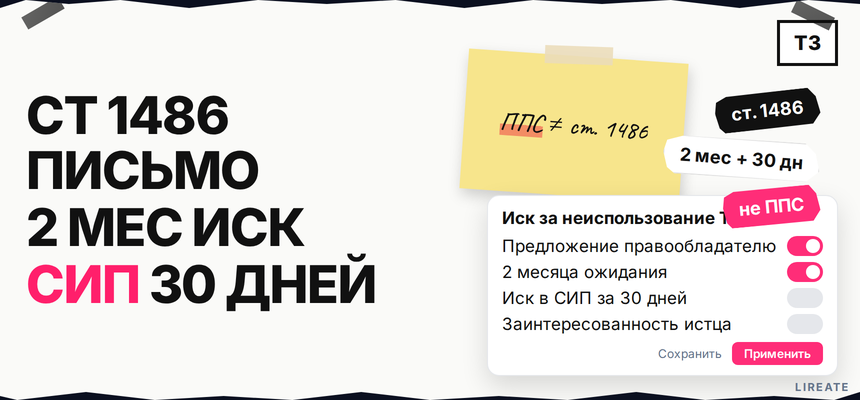
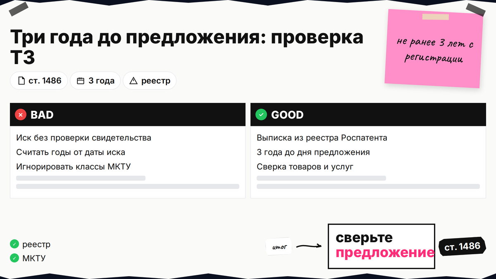
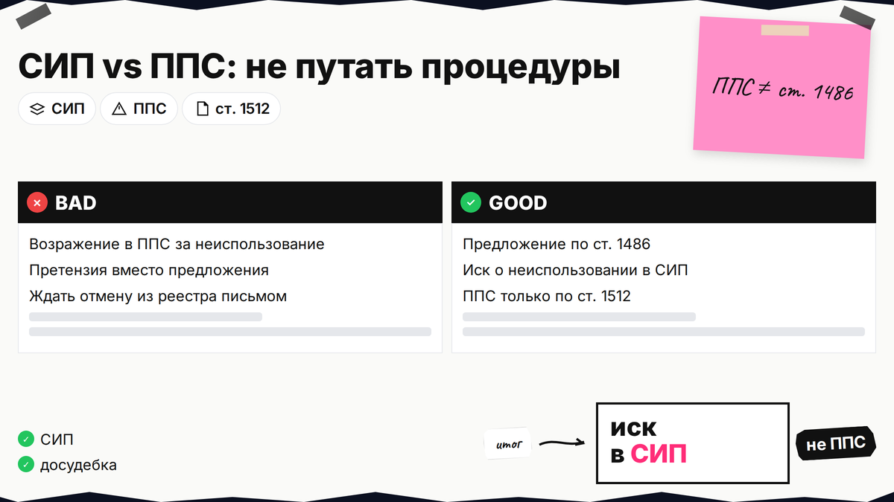
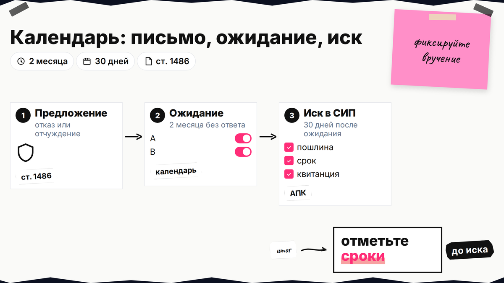

Чужой товарный знак "висит" в реестре без товара, а ваш бренд блокирует заявка в Роспатент. Кнопки "аннулировать" нет: по ст. 1486 ГК РФ сначала письмо правообладателю, два месяца ожидания, затем иск в СИП за 30 дней. Ниже вы сверите сроки, отделите СИП от ППС и соберете доказательства неиспользования и заинтересованности. На 22.10.2026; не юруслуга.

TL;DR / Быстрый инсайт: Досрочное прекращение охраны товарного знака за неиспользование - это судебный путь по ст. 1486, а не заявление в Роспатент "на отмену". Сначала предложение заинтересованного лица (отказ от права в Роспатенте или договор отчуждения), затем 2 месяца без ответа по закону, потом иск в СИП в 30 дней. Три года неиспользования считают до даты предложения; доказывать использование обязан правообладатель (п. 3 ст. 1486). В ППС по ст. 1512 спорят о регистрации, не о неиспользовании.
СИП - арбитражный суд в Москве по п. 1 ст. 43.4 АК РФ. ППС при Роспатенте - возражения по ст. 1512; порядок возражения в ППС отличается от иска по неиспользованию.

Откройте спорное свидетельство в Поисковой платформе Роспатента (при необходимости - открытые реестры на fips.ru): номер, дата государственной регистрации, перечень товаров и услуг (классы МКТУ), адрес правообладателя. Предложение по ст. 1486 можно направить не ранее чем через 3 года с даты регистрации. Суд смотрит неиспользование в трех годах, непосредственно предшествующих дню предложения, а не "с любой даты на ваш выбор".
Делайте: заранее посчитайте исковое трехлетие от планируемой даты письма и соберите скриншоты рынка (сайт, маркетплейсы, реклама) с датами. Не делайте: считать, что знак "мертвый", если правообладатель вчера вывел товар - это вопрос доказательств на заседании.

| Ситуация | Куда идти | Норма | Итог |
|---|---|---|---|
| Знак не используют 3+ года, хотите снять охрану | Предложение → иск в СИП | ст. 1486 | Решение суда, прекращение с даты вступления в силу |
| Регистрация была ошибочной (сходство, недобросовестность) | Возражение в ППС | ст. 1512–1513 | Решение Роспатента, иной порядок и пошлины |
| Вам пишут, что вы нарушаете чужой знак | Досудебка и защита, не ст. 1486 | ст. 1515 и др. | См. ответ на претензию правообладателя |
Ответ на учебный вопрос: при неиспользовании товарного знака три года обращаются в СИП после досудебного предложения, а не в Палату по патентным спорам. ППС не заменяет иск по ст. 1486.
Делайте: зафиксировать в переписке с командой, что цель - именно неиспользование, а не оспаривание экспертизы. Не делайте: платить пошлину ППС (14 000 руб. по п. 2.28.4) в надежде "снять" знак за неактивность - основание другое.

По п. 1 ст. 1486 вы предлагаете правообладателю подать в Роспатент заявление об отказе от права на товарный знак (полностью или по части товаров) или заключить договор об отчуждении права. Копию направляют правообладателю и по адресу из Госреестра товарных знаков (или международного реестра). Повторное предложение - не ранее чем через 3 месяца после предыдущего.
В тексте укажите номер свидетельства, ваши контакты, срок для ответа (ориентир - два месяца по закону), что при бездействии вы намерены обратиться в СИП. Отправляйте заказным письмом с уведомлением о вручении или иным способом, где видна дата вручения; сохраните опись вложения и трек.
Делайте: приложить копию выписки из реестра и кратко описать, какие товары/услуги, по вашему мнению, не использовались. Не делайте: требовать "удалить знак из базы" без ссылки на ст. 1486 - Роспатент сам по письму третьих лиц охрану не снимает.
Схема сроков: регистрация ТЗ → +3 года (можно предложение) → дата предложения → +2 месяца ожидания → +30 календарных дней на иск в СИП → заседания → решение → вступление в силу → ваша заявка в Роспатент
| Этап | Срок | Действие |
|---|---|---|
| После регистрации чужого знака | 3 года | Можно направить предложение по ст. 1486 |
| После предложения | 2 месяца | Ждать отказ в Роспатенте или договор отчуждения |
| Окно на иск | 30 дней | Подать иск в СИП, если нет отказа и нет договора |
| Повторная попытка | +3 месяца | Минимум после предыдущего предложения |
Если предложат отчуждение на приемлемых условиях, иногда выгоднее купить знак. Если молчат - не пропустите 30-дневное окно на иск.
Делайте: завести таблицу в календаре с напоминанием на 59-й день после вручения предложения. Не делайте: подавать иск на 35-й день после письма - двух месяцев еще нет.
Истец должен показать, что ему нужно освободить обозначение или классы: реальная или подготавливаемая деятельность, однородность товаров с перечнем спорного знака (п. 6 ст. 1483 про сходство в однородных товарах). Суды смотрят не только формальную заявку в Роспатент: в деле СИП-60/2025 недостаточно было одной заявки без коммерческого намерения.
Соберите: свои договоры, счета, образцы упаковки, сайт, планы запуска, переписку с производством, заявку или свидетельство на сходное обозначение в нужных классах. Покажите, почему именно этот знак мешает выходу на рынок.
Делайте: связать классы МКТУ из вашего продукта с классами в свидетельстве ответчика. Не делайте: подавать иск "про запас" без бизнес-плана - риск отказа в иске по заинтересованности.
На заседании ответчик будет доказывать использование: ввод в оборот, лицензия, использование под контролом правообладателя, варианты знака без изменения существа (п. 2 ст. 1486). Бремя на нем (п. 3); он может ссылаться на обстоятельства, не зависящие от него.
Делайте: заранее запросить у суда перечень вопросов и уточнить требования, если нашли использование только в части классов. Не делайте: полагаться только на "знака нет на Ozon" без анализа других каналов.
Ответчик часто показывает дистрибуцию, упаковку, рекламу. При удовлетворении иска охрана прекращается с вступления решения в силу (п. 1 ст. 1486). Затем подайте заявку после чек-листа L01.
Делайте: хранить все доказательства мониторинга в папке дела до апелляции. Не делайте: начинать массовый выпуск продукции под спорным обозначением до вступления решения в силу - риск иска по ст. 1515.
Сверьте свидетельство в Поисковой платформе, посчитайте три года с регистрации и исковое трехлетие до даты предложения. Отправьте предложение с фиксацией вручения, отметьте в календаре 2 месяца и 30 дней на иск. Параллельно соберите пакет заинтересованности, а не только заявку в Роспатент. Материалы по товарным знакам - в рубрике "Товарный знак" на Лирейт; сопровождение регистрации и споров - на странице регистрации товарного знака. При крупном споре подключайте поверенного до отправки предложения.
Материал проверен: редакция Лирейт.
Достоверность данных: нормы ст. 1486, 1483, 1512, 1515 ГК РФ, ст. 43.4 АК РФ и ст. 125–126 АПК РФ сверены с zakonrf.info и base.garant.ru на 22.10.2026; судебные акты СИП-60/2025 и СИП-593/2025 - по открытым карточкам ГАРАНТ. Яндекс Вордстат в этой сессии не запрашивался (MCP недоступен).
После досудебного предложения по ст. 1486 - в СИП с иском о досрочном прекращении. ППС рассматривает возражения против предоставления охраны по ст. 1512, а не неиспользование.
Это письмо правообладателю с требованием подать отказ от права в Роспатенте или заключить договор отчуждения знака (полностью или по части товаров). Его направляют также на адрес из реестра.
Два месяца без отказа правообладателя в Роспатенте и без договора отчуждения, затем иск в СИП в течение 30 дней после истечения этих двух месяцев.
За три года, непосредственно предшествующие дню направления предложения правообладателю. Отсчет ведите от даты вручения письма, а не от даты иска.
Правообладатель (ответчик). Истец обычно показывает заинтересованность и обстоятельства, на которых основан иск; факты использования оспаривает ответчик документами.
Часто нет: суду нужны признаки реального намерения вести деятельность под обозначением. Дополните заявку договорами, продуктом, однородностью классов; ориентир - ужесточение практики 2025–2026 (в т.ч. СИП-60/2025).
Да, требования могут быть частичными - по отдельным позициям перечня МКТУ, если неиспользование доказано в отношении этой части. Сформулируйте это в иске явно.